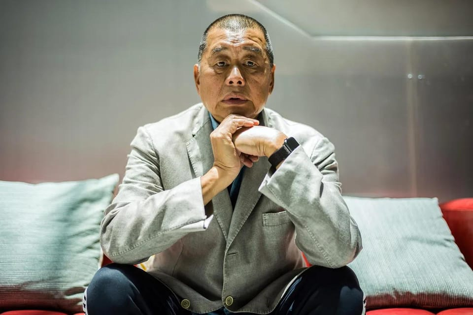

世界苦茶12月15日新闻 | 26条 | 香港高等法院裁定《苹果日报》黎智英三项罪名成立

香港高等法院裁定《苹果日报》黎智英三项罪名成立 | 香港民主党解散 终结31年历史 | 台湾宪政史首次行政院不副署立法院法案 | 泽连斯基称基辅愿意放弃加入北约的要求 | 智利极右翼候选人当选总统
苦茶数据
美元兑人民币：7.04（昨日7.05，前日7.05）
美元兑日元：155.15（昨日155.75，前日155.73）
上证指数：3867（昨日3889，前日3871）
标普500指数：6818（昨日6827，前日6901）
比特币：87030（昨日89399，前日90429）
布伦特原油：60.60（昨日61.12，前日61.67）
中国新闻
**• 香港，高等法院12月15日裁定《苹果日报》黎智英三项罪名成立。 **
法院认为：串谋发表煽动刊物（英治时期刑法罪名）：2019年逃犯条例修例前后，《苹果日报》涉案文章客观上具有煽动性，构成“引发对政府的憎恨藐视”的旧煽动罪。黎智英直接影响日报采编，是串谋的主谋。苹果日报串谋勾结境外势力：在《国安法》实施前，黎以苹果日报为平台，呼吁外国对香港特区采取敌对行动；国安法实施后，虽然黎的呼吁变得含蓄和隐晦，但是意图依然如故，并且继续为推动其活动而行事。黎智英串谋勾结境外势力：国安法实施前，黎与Mark Simon、李宇轩、陈梓华、刘祖迪等人约定进行国际游说，寻求对香港抗争的支持；推定这一约定在国安法实施后仍然延续。法庭预订2026年1月12日进行书面陈情，至于判刑期则未定，法庭会尽快宣布，所有犯案人，包括同案8名被告会一同宣判。
• 香港民主党解散 终结31年历史。
香港最大民主派政党民主党正式表决通过解散和清盘，终结31年历史。综合香港01和路透社等报道，香港民主党星期天下午召开特别会员大会，共有121人投票；其中117票赞成清盘，零票反对，四票弃权，支持率约97％。民主党主席罗健熙在会后宣布，民主党即日起结束运作。他也表明，没有任何重组和再组织团体的想法。罗健熙称，民主党怀着不舍心情去做解散决定；至于具体党产金额，要待清盘人完成程序。清盘完成后若有剩余资产，会捐给工业伤亡权益会。用作总部的商业大楼单位则已找到买家，预计会在年底前清空。民主党在1994年由香港民主同盟与汇点合并而成，一度是香港立法会第一大党。
• 马兴瑞确定失势。
原副国级领导人王丙乾 12月8日逝世，遗体14日在广州殡仪馆火化。电视画面和现场照片 显示，除马兴瑞外的全体政治局委员都送了署名花圈，证实马兴瑞失势。马兴瑞在6月中央政治局会议召开前，去自治区公安厅调度反恐维稳；会后，他被免去新疆党委书记职务。在此前后，自治区党委召开了十届十四次全会，但没有公开报道。其后，马兴瑞缺席了11月中央政治局会议、上周的中央经济工作会议。
• 《疯狂动物城2》重返票房榜首，全球票房突破10亿美元。
《Zootopia 2》在上映第三个周末以2630万美元重夺北美票房冠军，工作室周日估计称，该片成为今年第二部全球票房突破10亿美元的影片。随着《Avatar: Fire and Ash》周五登场，影院迎来相对清淡的周末。没有重大新片上映，留在档期的《Zootopia 2》和《Five Nights at Freddy’s 2》争夺榜首。《Zootopia 2》胜出，凭借在中国的巨大成功，其全球票房迅速达到11.4亿美元。其中中国票房为5.024亿美元。
• 2月22至27日的全国人大常委会第19次会议，审阅大量法律。
将三审《生态环境法典》《危险化学品安全法》《国家发展规划法》草案，《民用航空法》《渔业法》修订草案。二审《民族团结进步促进法》草案，《对外贸易法》《国家通用语言文字法》修订草案。初次审议《关于刑事诉讼法有关规定的解释》草案，《国有资产法》《托育服务法》《南极活动与环境保护法》草案，《银行业监督管理法》《商标法》修订草案。会议将批准增补中国人民解放军选举委员会员。
印太新闻
**• 台湾，行政院长卓荣泰12月15日宣布，不副署立法院11月14日三读通过的《财政收支划分法》修正案。 **
《中华民国宪法》第37条：“总统依法公布法律，须经行政院院长之副署”，阁揆不副署则法律无法公布生效。在野党主张，依宪法第57条（增修条文第3(2)条），行政院提出覆议法案，立法院决议维持原案，则行政院长“应即接受”，没有其他选择，“不副署”不是合法救济手段。民进党则主张“不副署”也是合法手段，若立法院不服，依宪可提出倒阁，总统相应可解散立法院重选。已三读通过但尚未公布生效的法案，除本案外，还有立法院12月12日通过的“停砍公教年金”法案。
1991年，时任行政院长郝伯村曾拒绝副署总统李登辉的一件人事任命案，使该案搁置。此次拒绝副署法律案的状况则是史上首度发生。
• 为什么美国国防法案中关于台湾参加环太平洋演习的表述被删除了。
为什么美防务法案中关于台湾参加“环太平洋”军演的提及被删？参议员要求“强烈鼓励”对台发出邀请的措辞在妥协法案中被移除，此事在台北引发疑问。一些分析人士警告，参议院在2026年国防授权法案中通过的相关措辞被删，甚至可能为北京重返世界最大海军演习铺路。该措辞在上周国会最终谈判中消失——尽管其他涉台安全条款有所加强。众议院周三通过妥协版本时未作其他变动。台北外交部强调与美国的军事合作在质量和规模上持续深化，分析人士则称此项省略重新激起了对美方支持界限的长期担忧——尤其是在北京试图阻挡的高可见度多边平台上。
• 制止悉尼持枪歹徒的路人被誉为英雄。
一名在悉尼邦迪海滩致命袭击中夺走枪手武器的男子因其英勇行为和救人之举受到赞扬。澳大利亚电视台播出并在社交媒体上流传的一段视频显示，一名手无寸铁的男子从后面走近一名据称的枪手，该嫌疑人当时正在开火并持有一支长枪，随后该男子从后方用手掐住其颈部。画面中这名平民似乎与枪手扭打并夺走了武器，枪手倒地后该平民走开，随后将枪指向该名被指控的射手并举起手。
• 泰国称柬埔寨的火箭弹袭击在新一轮边境冲突中造成首名平民死亡。
泰国官员称，周日一枚来自柬埔寨的火箭弹袭击导致一名63岁村民死亡，这是过去一周两国边境冲突中首次确认直接造成的平民死亡。两国证实，由12月7日的一场小规模交火引发的大规模战斗周日仍在继续，12月7日的交火曾造成两名泰国士兵受伤。双方正为长期存在的边界地带争夺控制权，部分地区内有数百年历史的寺庙遗址。官方数据显示，过去一周的战斗已造成两国边境双方逾二十余人死亡，超过五十万人流离失所。
科技新闻
**• 工信部12月15日公告，许可北汽极狐阿尔法S、长安深蓝SL03两款L3级自动驾驶车型产品，初期仅限车企公司在重庆、北京部分高快速路段开展上路通行试点。 **
经济新闻
• 中国11月经济数据公布。
中国11月社会商品零售37841亿元、同比增1.0%，餐饮收入6057亿元、同比增3.2%。11月规上工业增加值同比增4.8%、环比增0.44%。1至11月固定资产投资同比减2.6%，扣除房地产后为增长0.8%。其中外企减14.1%。上述三项均较10月进一步放缓。11月末商品房待售75306万平、同比增2.6%，其中住宅39361万平、同比增4.3%。11月CPI同比涨0.7%、环比跌0.1%，PPI同比跌2.2%、环比涨0.1%。对投资下滑，习近平称“既要高度重视也要沉着冷静”，从2035目标要求看，投资于物和“投资于人”（民生领域）都有广阔空间。
• 中国劳动力平均年龄从32岁升至近40岁。
中国全国劳动力人口数量持续下降的同时，劳动力人口平均年龄不断上升。中国中央财经大学人力资本与劳动经济研究中心星期天发布的《中国人力资本报告2025》显示，从1985年到2023年，中国劳动力平均年龄从32.25岁上升到39.66岁。其中，城镇劳动力平均年龄从33.03岁上升到39.25岁，乡村则从31.99岁上升到 40.54岁。2023年中国劳动力人力资本总量按当年价值计算为1126.11万亿元，同比增加240.01万亿元。第一财经引述中国人力资本度量项目负责人李海峥分析称，尽管年龄增长，人数减少，但劳动力人力资本总量仍持续增加，主要原因是整体教育水平提升。
• 证监会主席吴清回应请辞传闻。
中国证监会主席吴清近日公开回应关于他请辞的传闻，不点名地批评路透社误报新闻，并指有关报道浪费了部分行业同事的精力，“我倒觉得挺不应该的。” 吴清12月6日出席中国证券业协会第八次会员大会并致词，阐述如何加快打造一流投资银行和投资机构。近日网上流传的现场视频显示，吴清致辞时开门见山地对请辞传闻作出回应。吴清开场时就自嘲：“参加这个会不是让大家看到我还健在。这个会历任主席都是参加的，主要还是来看看大家”，引发观众笑声。他接着说：“前一段时间出差过程中，碰到某重要通讯社’报道’一些情况。我倒是不以为意。但是由于那样一些误报，创造了很多的流量，浪费了一部分行业同事们的精力。
• 法国呼吁推迟就南方共同市场协议的关键投票。
法国政府周日呼吁推迟各国就欧盟—南方共同市场贸易协定进行的一项关键投票，进一步扩大了联盟内部围绕该有争议协议的分歧。法国总理塞巴斯蒂安·勒科尔努办事处周日晚间表示：“法国要求将十二月的最后期限顺延，以便我们继续努力，争取为欧洲农业争取应有的合法保护。”该声明证实了POLITICO周四的报道称巴黎正推动延期。该呼吁正值欧盟即将与阿根廷、巴西、乌拉圭和巴拉圭最终达成这项谈判已逾25年的协议之际，该协定将形成一个超过7亿人的共同市场。
• “遏制中国的努力不会成功”——习近平对高层领导表示。
扼杀中国的努力不会成功，习近平在2026年经济议程会议上誓言 中国的崛起不可阻挡，国家主席在中央经济工作会议上表示，并罕见以“有骨气”提及与美国的贸易战 在去年举行的年度会议上，习近平表示，中国在全球不确定性中取得的成就证明了其发展不可阻挡，同时强调要紧紧围绕国家议程。习近平的讲话出现在上周于北京召开的中央经济工作会议上，中国最高领导层在会议上誓言在持续的外部挑战面前增强经济韧性，并为来年制定议程。“实践证明，扼杀中国的图谋不会得逞，”习近平指出，并援引中国在2021至2025年“十四五”期间在多个领域取得的重要科技进展。习近平罕见且直接谈及中美贸易摩擦，称中国的应对“有骨气，有底气”。
• 中国要求地方政府在年底前向企业结清欠款。
中国要求地方政府在年底前清偿企业欠款 顶级规划官员称还债是“道德底线”，也是改善中国营商环境的最大举措 国家发展和改革委员会副秘书长肖伟鸣表示，所有低于50万元人民币的欠款必须在年底前清偿。该委员会是中国最高的经济规划机构。该活动于周六由总部位于北京的政府智库——中国国际经济交流中心主办。据中共上海市委机关报《解放日报》报道，肖伟鸣表示，地方政府必须偿还其所欠款项，这是“最基本的道德底线”。中共中央财经委员会办公室常务副主任韩文秀在会议上也强调，要防止以清旧账换新账的做法。
• 万科债券持有人拒绝延长支付期限，违约风险上升。
万科债券持有人否决20亿元债券展期计划，违约风险上升 周五晚结束的为期三天投票中否决展期提议，按中国金融市场机构投资者协会的备案，给这家开发商留出五个工作日的宽限期以偿付20亿元在岸债券。作为国有背景、在多个大城市拥有项目的中国最知名房企之一，万科此番受挫再度引发对地产行业的担忧——近年来业内一些知名开发商已出现违约。评级研究机构RatingDog创始人姚煜表示，万科可能提议将宽限期延长至30个工作日。
• 高级官员称，中国计划在2026年通过扩大进口和出口来推动贸易。
2026年将通过促进进出口拉动贸易增长 “我们将扩大出口和进口，推动对外贸易持续发展，”中央财经委员会办公室副主任韩文秀在由智库中国国际经济交流中心主办的年度会议上表示，央视报道。韩文秀指出，明年中国将鼓励服务贸易出口，并加大力度推动数字和绿色贸易。国际货币基金组织敦促中国“迅速果断”推进转型，呼吁出台更有力的政策组合——包括更积极的宏观经济政策、加强社会保障以及对房地产领域调整的定向支持——以提振信心并刺激消费。
• 中国电动汽车电池巨头涉足造船业，以巩固北京的主导地位。
宁德时代和国轩高科为中国在加速脱碳驱动下打造新能源船舶的努力注入动力 业内人士和分析师表示，中国制造的纯电动集装箱船也将扩大北京在全球造船业的领先优势。世界最大的电动汽车电池生产商宁德时代最近宣布，其自主研发的纯电动船将在三年内驶向海洋，强化了公司打造全球新能源巨头的雄心。上海跃进国际航运助理总经理熊浩表示：“他们对纯电动集装箱船的投资和努力显示出中国在全球造船业日益增强的影响力。纯电动船能否被全球班轮公司广泛接受还有待观察。
俄乌战争
• 路透社报道，俄罗斯12月石油和天然气收入预计将降至自2020年以来的最低水平。
路透社12月12日报道称，俄罗斯12月的石油和天然气收入预计将较去年同期减少近一半，降至约4100亿卢布。全球油价走低和卢布走强是导致收入下滑的主要原因，这使月度收入降至自2020年以来的最低水平。油气收入仍是克里姆林宫的主要资金来源，约占联邦预算收入的四分之一。自2022年俄罗斯对乌克兰发动全面战争以来，国防和安全支出上升对这些收入造成压力。路透根据行业与官方数据计算，全年油气收入预计为8.44万亿卢布，较去年下降近25%，低于财政部对油气收入的预测。分析人士称，俄罗斯计划通过发行国债来弥补12月的预算赤字，但警告称，如果油价持续偏低且汇率假设无法实现，2026年的形势可能更加艰难。
• 据报道，泽连斯基称基辅愿意放弃加入北约的要求。
据报道，周日乌克兰总统弗拉基米尔·泽连斯基表示，若美国和欧洲在有关拟议和平协议的持续谈判中提供足够的安全保障，乌克兰愿意放弃加入北约的要求。“我们在谈的是乌克兰与美国之间的双边安全保障——即类似于第五条的保障以及来自我们的欧洲伙伴和加拿大、日本等其他国家的安全保障，”泽连斯基在与记者的群聊中说，据《金融时报》报道。乌克兰与欧洲领导人正在制定一项由美国起草的20点和平计划，其中包括对俄罗斯的领土让步。
• 美国特使抵达柏林，与泽连斯基就最新一轮乌克兰和平谈判会面。
美国特使周日上午抵达柏林，与泽连斯基就乌克兰和平协议举行最新一轮会谈。美国总统特朗普的特使史蒂夫·维特科夫和女婿贾里德·库什纳被德国通讯社摄影记者在柏林市中心拍到。乌克兰总统弗拉基米尔·泽连斯基表示，未来几日乌，美，欧官员将在柏林举行一系列会谈。泽连斯基在周六晚向全国发表的讲话中说：“最重要的是，我将会见特朗普总统的特使，并且还将与我们的欧洲合作伙伴以及许多领导人就和平的基础——结束战争的政治协议进行会谈。”华盛顿数月来努力在双方诉求之间斡旋，特朗普敦促尽快结束对俄战争，并对拖延日益感到恼火。
• 美国特使赴柏林 参加新一轮乌克兰和平谈判。
乌克兰总统弗拉基米尔·泽连斯基周日表示，愿意放弃加入北约的努力，以换取西方的安全保障，但在与美国特使就结束战争进行会谈时，拒绝了美国要求割让领土给俄罗斯的主张。泽连斯基与美国总统唐纳德·特朗普的特别特使斯蒂夫·威特科夫及特朗普的女婿贾里德·库什纳会面。乌克兰领导人发布了谈判桌的照片，德国总理弗里德里希·梅尔茨坐在他旁边，面对美国代表团。在会谈前他在一个WhatsApp群组的语音片段中回应记者提问时表示，鉴于美国和一些欧洲国家拒绝乌克兰加入北约的要求，基辅期望西方提供一套类似于对北约成员的安全保障。“这些安全保障是防止俄罗斯新一轮侵略的机会，”他说。
• 过去24小时内，俄罗斯攻击在乌克兰造成2人死亡、11人受伤。
地区当局12月14日表示，过去一天俄罗斯对乌克兰的袭击造成两名平民死亡，至少11人受伤。空军报告称，乌方在夜间击落了俄罗斯发射的138架无人机中的110架，其中包括“沙hed”型攻击无人机。俄方还发射了一枚“伊斯坎德尔-M”弹道导弹。声明称，该导弹和10架无人机袭击了六处不同地点。敖德萨州州长奥列格·基佩尔表示，俄罗斯连续第二晚对敖德萨州南部发动大规模无人机袭击，造成能源，交通，工业和民用基础设施受损。乌克兰海军称，早在12月13日，俄罗斯在黑海袭击了土耳其籍货船“维瓦”，该船前往埃及，载有葵花籽油，船上有11名土耳其船员，未造成伤亡。
世界新闻
• 五人因密谋袭击德国圣诞集市被捕。
五人因密谋袭击德国圣诞集市被捕 德国警方逮捕了五名男子，怀疑他们参与策划驾车冲撞圣诞集市的袭击。三名摩洛哥人、一名埃及人和一名叙利亚人周五在巴伐利亚州南部因该阴谋被拘留。官方表示，怀疑存在“伊斯兰主义动机”。检方称，56岁的埃及人被指“煽动实施车辆袭击旨在尽可能多地杀伤或重伤人员”。三名摩洛哥人据称同意实施该袭击。德国在此前圣诞集市发生的袭击后一直处于高度戒备状态，包括去年12月在马格德堡的袭击造成六人死亡。当局未透露计划何时实施或具体针对哪个集市，但表示相信目标位于慕尼黑东北的丁戈尔芬-兰道地区。德国《图片报》报道称，该名埃及人是当地一座清真寺的伊玛目。
• 美国军方称三名美国人在叙利亚被伊斯兰国枪手杀害。
美军称三名美国人在叙利亚被IS枪手杀害 美军中央司令部表示，叙利亚发生一起由“伊斯兰国”枪手发动的伏击，造成两名美军士兵和一名美国平民译员死亡。官员称攻击中另有三名军人受伤，枪手在袭击中“被击毙”。叙利亚国家通讯社称两名叙利亚军方人员也受伤。美国总统唐纳德·特朗普在社交媒体上写道，这是“对美叙两国的ISIS袭击”，并称将有“非常严重的报复”。叙利亚总统在袭击后向特朗普表示慰问。周日，特朗普表示两名受伤的美方人员已出院。死亡者身份尚未公布，军方表示将在通知其近亲后再公布。负责指挥美国在欧洲，非洲和印太地区军事行动的中央司令部在X上发文称，袭击是“一名孤独的ISIS枪手发动的伏击”。
• 智利12月14日举行总统选举第二轮投票。极右翼政党智利共和党候选人何塞·安东尼奥·卡斯特得票率超过58%，当选新一届总统。
左翼执政联盟总统候选人珍妮特·哈拉得票率略高于41%。卡斯特将于明年3月11日就职。他以“变革的力量”为竞选口号，呼吁减少国家干预、削减公共支出和企业税负。在竞选过程中，他将政策重点放在公共安全领域，主张建设高安全级别监狱、加重对犯罪集团处罚以改善社会治安。他还计划大规模驱逐没有合法身份的移民，并加强边境地区管控。